- 2 huevos
- 1.5 cucharadas de Manteca
- 75g coliflor
- 50g choclo en lata
- 1 zanahoria
- 4 cucharadas de semillas chías (o sésamo)
- 4 cucharadas de semillas de sésamo negras
- Salsa picante, sal, pimienta para sazonar
Preparacion
1) Cocinar en una sartén el coliflor con la zanahoria, choclo y manteca
2) Agregar huevos y las semillas de sésamo, sazonar con sal y pimienta
1) Cocinar en una sartén el coliflor con la zanahoria, choclo y manteca
2) Agregar huevos y las semillas de sésamo, sazonar con sal y pimienta

- 200g Coliflor
- 200g Brócoli
- 200g Ricota
- ½ Cucharada Nuez moscada
- ½ Cucharada Tomillo
- 100ml Agua
- 30g Queso rallado
- 1 Cucharada Aceite
- Sal, pimienta para sazonar
Preparacion
1) Colocar brócoli y coliflor en la olla
2) Mezclar ricota, nuez moscada, agua, romero para hacer una salsa, sazonar con sal y pimienta.
3) Verter salsa en los vegetales, cocinar por aprox30 min, esparcir queso rallado al poner en el plato.
1) Colocar brócoli y coliflor en la olla
2) Mezclar ricota, nuez moscada, agua, romero para hacer una salsa, sazonar con sal y pimienta.
3) Verter salsa en los vegetales, cocinar por aprox30 min, esparcir queso rallado al poner en el plato.

- 2 Huevos cocidos
- 40g Cebolla en pickles
- 40g Pepinillos en pickles
- 80g Jamón Cocido
- 20g Queso Parmesan
- 50g Rucula
- ½ Limon (jugo)
- 2 Cucharadas aceite de oliva
- Pimienta para sazonar
Preparacion
1) Cortar las verduras en rodajas, mezclar toda la ensalada.
2) Agregarle los huevos cortados por la mitad
1) Cortar las verduras en rodajas, mezclar toda la ensalada.
2) Agregarle los huevos cortados por la mitad

- 3 Huevos
- 100g Ricota
- 1 Tomate picado
- 40g Espinaca
- 1 Cucharada aceite
- Nuez moscada, Sal, Pimienta para sazonar
Preparacion
1) Cocinar Espinaca y tomate en una sartén hasta que se Ablande la espinaca
2) Romper los huevos arriba y cocinar hasta deseada consistencia
3) Esparcir ricota encima de los huevos, dejar hasta que caliente y servir
1) Cocinar Espinaca y tomate en una sartén hasta que se Ablande la espinaca
2) Romper los huevos arriba y cocinar hasta deseada consistencia
3) Esparcir ricota encima de los huevos, dejar hasta que caliente y servir

- 200g Carne
- 1 Zucchini
- 1 Cebolla de Verdeo
- 20g Maní sin sal
- 1 Diente de ajo
- 5g Jengibre
- ½ Chili picante
- ½ Limón (jugo)
- 1 Cucharada Salsa de Soja
- 2 Cucharadas de Miel
Preparacion
1) Cocinar carne con sus jugos, a la mitad de la cocción agregar Jengibre, Chili picante, limón, salsa de soja, miel, ajo, terminar de cocinar la carne
2) Agregar Zucchini, Cebolla de verdeo a la cocción, cocinar por 5 minutos aprox
3) Servir y agregar maní picado arriba
1) Cocinar carne con sus jugos, a la mitad de la cocción agregar Jengibre, Chili picante, limón, salsa de soja, miel, ajo, terminar de cocinar la carne
2) Agregar Zucchini, Cebolla de verdeo a la cocción, cocinar por 5 minutos aprox
3) Servir y agregar maní picado arriba

- 150g Carne
- 50g Porotos blancos
- 1 Pimentón
- 1 Tallo de Apio
- 20g Queso rallado
- 1 Cucharada Tomillo o hierbas italianas
- 1 Cucharada aceite
- 1 Cucharada vinagre balsámico
- Chili picante, Sal, Pimienta para sazonar
Preparacion
1) Cocinar carne cortada en tiras con aceite
2) Picar Apio finamente y el Pimentón
3) Cocinar todo junto con la carne, condimentar Tomillo o hierbas italianas y vinagre balsámico
4) Servir y espolvorear con queso rallado
1) Cocinar carne cortada en tiras con aceite
2) Picar Apio finamente y el Pimentón
3) Cocinar todo junto con la carne, condimentar Tomillo o hierbas italianas y vinagre balsámico
4) Servir y espolvorear con queso rallado

- 125g de pollo
- 100g Mozzarella bajo en grasa
- 1 y ½ Tomates
- ½ Cucharada de orégano
- 4 cucharadas de Aceite de oliva
- 3 cucharadas de Vinagre balsámico
Preparacion
1) Precalentar horno a 200°c
2) Agregar de base 2 cucharadas de aceite de oliva, agregar Pollo, sazonar con sal y pimienta
3) Cortar mozzarella y tomate en rodajas, colocar arriba del pollo, espolvorear con orégano
4) Agregar el aceite de oliva restante y vinagre balsámico arriba y cocinar en horno por 25 minutos
1) Precalentar horno a 200°c
2) Agregar de base 2 cucharadas de aceite de oliva, agregar Pollo, sazonar con sal y pimienta
3) Cortar mozzarella y tomate en rodajas, colocar arriba del pollo, espolvorear con orégano
4) Agregar el aceite de oliva restante y vinagre balsámico arriba y cocinar en horno por 25 minutos
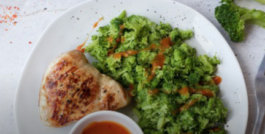
- 200g Pollo
- 300g Brócoli
- 1.5 Cucharadas de salsa de chili picante
- 4 Cucharadas de Aceite de oliva
- Sal, Pimienta para sazonar
Preparacion
1) Hervir agua y cocinar brócoli por aprox 5 minutos
2) Cocinar pollo con aceite
3) Procesar o picar brócoli hasta que consiga una consistencia parecida al arroz
4) Servir pollo con brócoli sazonado con chili picante
1) Hervir agua y cocinar brócoli por aprox 5 minutos
2) Cocinar pollo con aceite
3) Procesar o picar brócoli hasta que consiga una consistencia parecida al arroz
4) Servir pollo con brócoli sazonado con chili picante

- 200g yogurt
- 1 Cucharadas semillas de lino/sésamo
- 30g Nuez
- ½ Manzana
- 50ml agua
- Mezclar todo junto
- 150g yogurt
- 1 Cucharadas semillas de lino/sésamo
- 20g Nuez
- ½ Manzana
- 50ml agua
- Mezclar todo junto
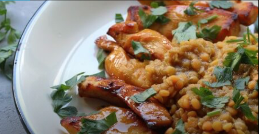
- 150g Pollo
- 60g Lentejas
- 2 cucharadas mostaza de Dijon o común
- 1 naranja (jugo)
- 1 Diente de ajo
- 2 cucharadas de Salsa de soja
- Perejil, Chili picante, Sal, pimienta para sazonar
Preparacion
1) Cortar pollo en tiras. mezclar Mostaza, Jugo de naranja, ajo, sazonar con sal y pimienta, y marinar con el pollo, cocinar por 30 minutos
2) Cocinar lentejas con 150ml de agua, agregar salsa de soja y dejar cocinar hasta que se evaporen los líquidos
3) Servir lentejas con pollo arriba
1) Cortar pollo en tiras. mezclar Mostaza, Jugo de naranja, ajo, sazonar con sal y pimienta, y marinar con el pollo, cocinar por 30 minutos
2) Cocinar lentejas con 150ml de agua, agregar salsa de soja y dejar cocinar hasta que se evaporen los líquidos
3) Servir lentejas con pollo arriba
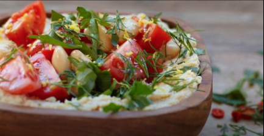
- 150g porotos blancos
- 100g garbanzos
- 200g ricota
- 100 tomates cherrys cortados
- ½ limón
- Perejil
Preparacion
1) Procesar garbanzos y ricota con una pizca de sal hasta quedar uniforme
2) Mezclar porotos y tomates con jugo de limón, servir con rayadura de limón, perejil y crema de garbanzos y ricota
1) Procesar garbanzos y ricota con una pizca de sal hasta quedar uniforme
2) Mezclar porotos y tomates con jugo de limón, servir con rayadura de limón, perejil y crema de garbanzos y ricota
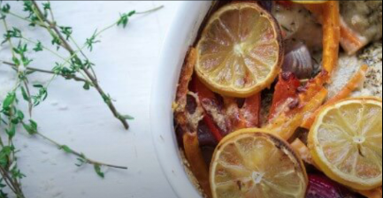
- 200g Pollo
- 1 Pimentón
- 1 Zanahoria
- 1 Cebolla colorada
- 30g Queso rallado
- 1 limón
- 1 cucharada de hierbas italianas (o tomillo)
- 2 cucharadas aceite de oliva
- Sal, pimienta para sazonar
Preparacion
1) Precalentar horno a 200°c
2) Colocar 1 cucharada aceite de oliva de base en cacerola, cortar pimiento y zanahorias en tiras, y la cebolla en cuadrados, colocar pollo en cacerola, sazonar con sal, pimienta y hierbas italianas, agregar capa de verduras cortadas y queso rallado
3) Cortar rodajas de limón y colocar arriba con aceite de oliva restante, hornear por 40 minutos aprox
1) Precalentar horno a 200°c
2) Colocar 1 cucharada aceite de oliva de base en cacerola, cortar pimiento y zanahorias en tiras, y la cebolla en cuadrados, colocar pollo en cacerola, sazonar con sal, pimienta y hierbas italianas, agregar capa de verduras cortadas y queso rallado
3) Cortar rodajas de limón y colocar arriba con aceite de oliva restante, hornear por 40 minutos aprox
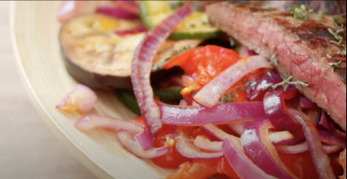
- 250g Carne
- ½ zucchini
- ½ berenjena
- 1 cebolla
- 1 tomate
- 1 cucharada hiervas italianas
- 2 cucharadas aceite de oliva
- Chili picante, sal, pimienta para sazonar
Preparacion
1) En una sartén calentar aceite, y cocinar carne
2) Sacar la carne de la sartén y freír en la misma, los vegetales
3) Servir carne con los vegetales asados
1) En una sartén calentar aceite, y cocinar carne
2) Sacar la carne de la sartén y freír en la misma, los vegetales
3) Servir carne con los vegetales asados
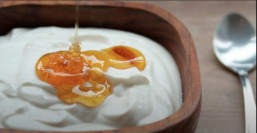
- 400g yogurt
- 4 Cucharadas miel
- 4 Cucharadas de agua
Preparacion
1) Mezclar todo en una taza
1) Mezclar todo en una taza
- 300g yogurt
- 3 Cucharadas miel
- 3 Cucharadas de agua
Preparacion
1) Mezclar todo en una taza
1) Mezclar todo en una taza
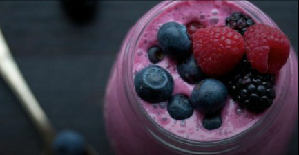
- 350g yogurt
- 150g arándanos/cualquier baya
- 75ml leche
- 350ml agua
Preparacion
1) Procesar todo en una licuadora
1) Procesar todo en una licuadora
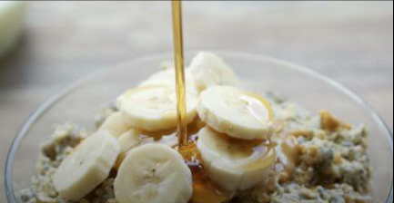
- 40g Avena
- 80ml Leche
- 1 Banana
- 1 Cucharada semilla de chía o sésamo
- 1 Cucharada de mantequilla de maní al natural
- 1 Cucharada de miel
Preparacion
1) Combinar todos los ingredientes menos la miel y banana, dejar reposar por 15 min en la heladera
1) Agregar banana en rodajas y miel
1) Combinar todos los ingredientes menos la miel y banana, dejar reposar por 15 min en la heladera
1) Agregar banana en rodajas y miel
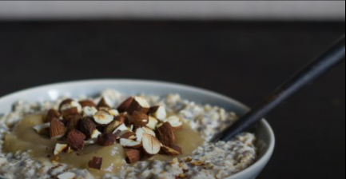
- 60g Avena
- 120g salsa de manzana al natural
- 1 Cucharadas de semillas chías o sésamo
- 1 Cucharadas de miel
- 15g Almendras picadas
- ½ Cucharadas de canela
Preparacion
1) Tostar las almendras hasta dorar
2) Mezclar todos los ingredientes, dejar reposar por 15 min en la heladera
1) Tostar las almendras hasta dorar
2) Mezclar todos los ingredientes, dejar reposar por 15 min en la heladera
- 150g Pollo
- 120g Coliflor
- ½ Cebolla
- 30g Lentejas
- 25g Puerro
- 30g Arvejas
- 100ml Leche
- 100ml Agua
- 1 cucharada de polvo de curry o chili picante
- Sal, pimienta para condimentar
Preparacion
1) Cortar pollo en tiras, y las puerro, coliflor, cebolla en rebanadas
2) Cocinar pollo y cebolla con aceite por 5 minutos, añadir coliflor, lentejas, puerro, arvejas, polvo de curry, pimienta y cocinar por 2 minutos más, revolver ocasionalmente
3) Agregar leche y agua, llevar a punto hervor y luego cocinar a fuego lento por 15 minutos, revolver ocasionalmente
1) Cortar pollo en tiras, y las puerro, coliflor, cebolla en rebanadas
2) Cocinar pollo y cebolla con aceite por 5 minutos, añadir coliflor, lentejas, puerro, arvejas, polvo de curry, pimienta y cocinar por 2 minutos más, revolver ocasionalmente
3) Agregar leche y agua, llevar a punto hervor y luego cocinar a fuego lento por 15 minutos, revolver ocasionalmente
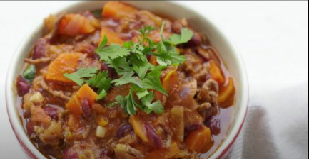
- 200g carne
- 100g poroto
- 2 Tomates picados
- 2 Zanahorias Rebanadas
- 1 Cebolla picada
- 1 Diente de ajo
- 10g Jengibre picado
- ½ Cucharada chili picante
- 200ml agua
- 1 Cucharada aceite
- Cilantro, Sal, Pimienta para condimentar
Preparacion
1) Cocinar con aceite cebollas, ajo, zanahorias, jengibre y chili picante por aprox 2 minutos
2) Añadir carne, cocinar por 5 minutos
3) Añadir porotos, tomates y agua, dejar cocinar por 15 minutos, servir, sazonar con sal, pimienta o cilantro picado
1) Cocinar con aceite cebollas, ajo, zanahorias, jengibre y chili picante por aprox 2 minutos
2) Añadir carne, cocinar por 5 minutos
3) Añadir porotos, tomates y agua, dejar cocinar por 15 minutos, servir, sazonar con sal, pimienta o cilantro picado
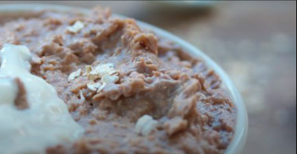
- 50g avena
- 200ml leche
- 2 cucharada de cacao
- 1 cucharada maní
- 1 banana molida
- 1 pizca de sal
- 200g yogurt
Preparacion
1) En una olla calentar la leche con la pizca de sal, agregar avena y cacao, dejar cocinar por 15 minutos, revolver ocasionalmente
2) Sacar del fuego y agregar maní, revolver, y agregar la banana molida arriba, servir junto con el yogurt
1) En una olla calentar la leche con la pizca de sal, agregar avena y cacao, dejar cocinar por 15 minutos, revolver ocasionalmente
2) Sacar del fuego y agregar maní, revolver, y agregar la banana molida arriba, servir junto con el yogurt
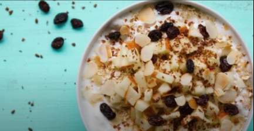
- 40g avena
- ½ manzana
- 2 cucharadas de semilla de lino/ sésamo
- 2 cucharadas de almendras
- 100g yogurt
- 100ml leche
Preparacion
1) Cortar la manzana en cubos, quitar las semillas y mezclar todo, dejar reposar 15 minutos
1) Cortar la manzana en cubos, quitar las semillas y mezclar todo, dejar reposar 15 minutos
- 30g avena
- 150ml leche
- 1 cucharada de cacao
- 1 cucharada maní
- 1 banana molida
- 1 pizca de sal
- 150g yogurt
Preparacion
1) En una olla calentar la leche con la pizca de sal, agregar avena y cacao, dejar cocinar por 15 minutos, revolver ocasionalmente
2) Sacar del fuego y agregar maní, revolver, y agregar la banana molida arriba, servir junto con el yogurt
1) En una olla calentar la leche con la pizca de sal, agregar avena y cacao, dejar cocinar por 15 minutos, revolver ocasionalmente
2) Sacar del fuego y agregar maní, revolver, y agregar la banana molida arriba, servir junto con el yogurt
- 25g avena
- ½ manzana
- 20g pasas de uvas
- ½ cucharadas de semilla de lino/ sésamo
- ½ cucharadas de almendras
- 75g yogurt
- 75ml leche
Preparacion
1) Cortar la manzana en cubos, quitar las semillas y mezclar todo, dejar reposar 15 minutos
1) Cortar la manzana en cubos, quitar las semillas y mezclar todo, dejar reposar 15 minutos
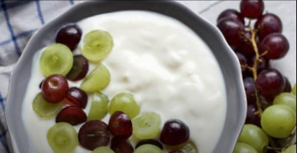
- 150g uvas
- 250g yogurt
Preparacion
1) Cortar las uvas por la mitad, mezclar con yogurt
1) Cortar las uvas por la mitad, mezclar con yogurt
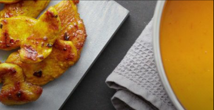
- 300g batata
- 100g tomates cherry
- 1 cebolla
- 1 diente de ajo
- 10g jengibre
- 1 cebolla de verdeo
- 1 cucharada de aceite
- 150g pollo
- 350ml agua
- Salsa picante, sal, pimienta para condimentar
Preparacion
1) Cortar en cubos la batata
2) En una olla calentar 50ml agua, agregar tomates, cebolla, ajo, jengibre y cocinar por 2 minutos, agregar batata y revolver por 5 minutos
3) Agregar agua restante y reducir el fuego a medio y dejar cocinando por 20 minutos
4) Sacar olla del fuego y procesar todo
5) Cortar el pollo en tiras, y mezclar con un poco de salsa picante, y una pizca de sal
6) En una olla cocinar el pollo por 5 minutos
7) Cortar cebolla de verdeo y poner en la sopa, servir sopa con pollo
1) Cortar en cubos la batata
2) En una olla calentar 50ml agua, agregar tomates, cebolla, ajo, jengibre y cocinar por 2 minutos, agregar batata y revolver por 5 minutos
3) Agregar agua restante y reducir el fuego a medio y dejar cocinando por 20 minutos
4) Sacar olla del fuego y procesar todo
5) Cortar el pollo en tiras, y mezclar con un poco de salsa picante, y una pizca de sal
6) En una olla cocinar el pollo por 5 minutos
7) Cortar cebolla de verdeo y poner en la sopa, servir sopa con pollo
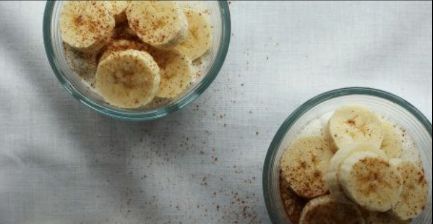
- 360g Yogurt
- 2 bananas
- 200ml agua
Preparacion
1)Cortar en rodajas las bananas
2) Mezclar todos los ingredientes
1)Cortar en rodajas las bananas
2) Mezclar todos los ingredientes
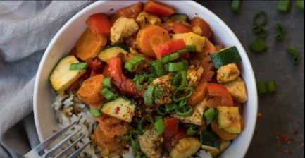
- 30g arroz
- 100g pollo
- 1 zanahoria
- ½ Pimiento rojo
- ¼ Zucchini
- 150ml leche
- 1 Diente de ajo
- 5g jengibre
- 1 cucharada de condimento curry
- 1 cucharada de aceite
- Chili picante, sal, pimienta para sazonar
Preparacion
1) En una olla cocinar el arroz, con 60ml agua, a fuego lento por 30 minutos o hasta que el agua se evapore
2) Cortar pollo en tiras, el pimiento, zucchini, zanahoria y la cebolla de verdeo en aros
3) En una sartén freír jengibre, ajo y condimento para curry por aproximadamente 2 minutos, agregar pollo y vegetales, menos la parte verde de la cebolla de verdeo, cocinar por 5 minutos mas
4) Agregar leche, sazonar con chili picante, sal y pimienta, dejar cocinar por 15 minutos mas
5) Servir curry en el arroz y esparcir la parte verde de la cebolla de verdeo
1) En una olla cocinar el arroz, con 60ml agua, a fuego lento por 30 minutos o hasta que el agua se evapore
2) Cortar pollo en tiras, el pimiento, zucchini, zanahoria y la cebolla de verdeo en aros
3) En una sartén freír jengibre, ajo y condimento para curry por aproximadamente 2 minutos, agregar pollo y vegetales, menos la parte verde de la cebolla de verdeo, cocinar por 5 minutos mas
4) Agregar leche, sazonar con chili picante, sal y pimienta, dejar cocinar por 15 minutos mas
5) Servir curry en el arroz y esparcir la parte verde de la cebolla de verdeo
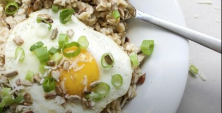
- 40g avena
- 1 cucharada de semillas de girasol
- 30g queso rallado
- 1 huevo
- 1 cebolla de verdeo
- 1 pizca de nuez moscada
- ½ cucharada de aceite
- Sal y pimienta para condimentar
Preparacion
1) En una olla poner 120ml de agua, agregar avena y una pizca de sal, cocinar a fuego lento por 10 minutos
2) En una sartén tostar semillas de girasol y agregarlo con la avena con el queso y nuez moscada y cebolla de verdeo menos la parte verde
3) Freír un huevo en sartén
4) Servir avena con el huevo arriba y esparcir la parte verde de la cebolla de verdeo, condimentar con pimienta
1) En una olla poner 120ml de agua, agregar avena y una pizca de sal, cocinar a fuego lento por 10 minutos
2) En una sartén tostar semillas de girasol y agregarlo con la avena con el queso y nuez moscada y cebolla de verdeo menos la parte verde
3) Freír un huevo en sartén
4) Servir avena con el huevo arriba y esparcir la parte verde de la cebolla de verdeo, condimentar con pimienta
- 300ml Leche
- 400g yogurt
- 1 banana
- 2 cucharadas de maní sin sal (opcional)
Preparacion
1) Licuar todo, comer el maní aparte
1) Licuar todo, comer el maní aparte
- 225ml Leche
- 300g yogurt
- ½ banana
- 1 cucharadas de maní sin sal (opcional)
Preparacion
1) Licuar todo, comer el maní aparte
1) Licuar todo, comer el maní aparte
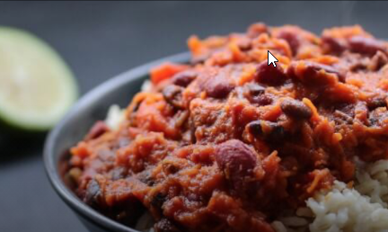
- 50g arroz
- 100ml agua
- ½ zanahoria
- 1 diente de ajo
- 100g porotos negros
- 100g garbanzos
- 100g puré de tomate
- ½ cucharada de chili picante
- 1 cucharada de aceite de oliva
- Sal, pimienta para condimentar
Preparacion
1) En una olla cocinar arroz, dejar cocinando por 30 minutos o hasta que se evapore el agua
2) Rayar zanahoria y picar el ajo finamente
3) En una olla calentar aceite, cocinar zanahoria y ajo por 4 minutos agregar porotos, garbanzos, tomate, chili picante, cocinar por 10 minutos
4) Servir arroz con el chili, sazonar con sal y pimienta
1) En una olla cocinar arroz, dejar cocinando por 30 minutos o hasta que se evapore el agua
2) Rayar zanahoria y picar el ajo finamente
3) En una olla calentar aceite, cocinar zanahoria y ajo por 4 minutos agregar porotos, garbanzos, tomate, chili picante, cocinar por 10 minutos
4) Servir arroz con el chili, sazonar con sal y pimienta
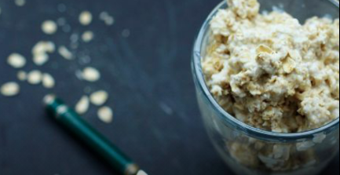
- 100g avena
- 160g yogurt
- 4 cucharadas de miel
Preparacion
1) Mezclar todos los ingredientes
1) Mezclar todos los ingredientes
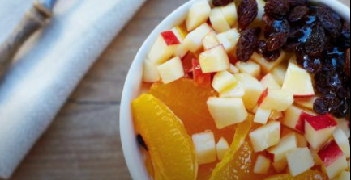
- 40g avena
- 100ml agua
- 1 naranja
- 1 manzana
- 20g pasas de uva
- 150g yogurt
- 1 cucharada de miel
Preparacion
1) Pelar naranja, separar en gajos y cortar la manzana en cubos
2) Mezclar todo, dejar reposar por 15 minutos en la heladera
1) Pelar naranja, separar en gajos y cortar la manzana en cubos
2) Mezclar todo, dejar reposar por 15 minutos en la heladera